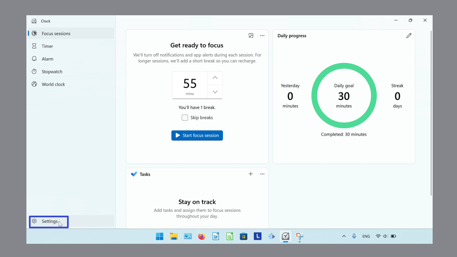

How to Edit the Focus Sessions Timer in the Microsoft Windows Clock (Windows 11)
This tutorial covers:
How to Start a Focus Session:
How to Pause a Focus Session
How to Resume a Focus Session
How to Reset a Focus Session
How to Show Time Remaining
No time to scroll down? Click through these presentation slides:
Watch a tutorial video:
How to Start a Focus Session With Click
- Step 1: First switch to Focus Sessions mode. Click the “Start focus session” button.
How to Start a Focus Session With Windows 11 Settings
Step 1: Open the Windows Clock. In the lower left, click the “Settings” or gear button.

- Step 2: Scroll down and on the right side of the “Notifications” section, click the “Change notification settings” option.

- Step 3: In the Windows 11 Settings window that opens, on the far right side of the “Focus” section click the drop-down menu arrow.

- Step 4: Click the “Start focus session” button.
How to Pause a Focus Session
Step 1: First start a Focus Session. Click the “Pause” button.

How to Resume a Focus Session
- Step 1: Pause a Focus Session. Click the “Resume” button.

How to Reset a Focus Session
- Step 1: First pause a Focus Session. Click the “Reset” button.
How to Show Time Remaining
- Step 1: Start a Focus Session. Click the “See more” or “…” button.

- Step 2: In the menu that opens, click to turn “Show time remaining” on or off.
- “Show time remaining” on
- “Show time remaining” off
Refer to these instructions for later with this free PDF tutorial.